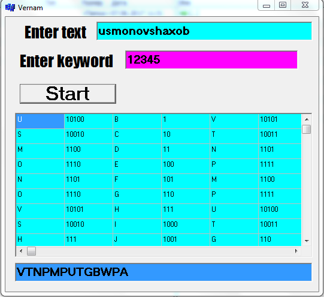
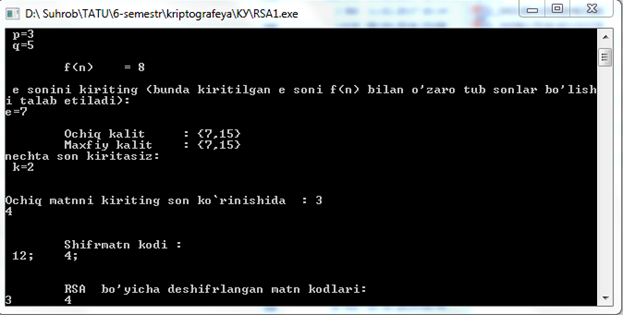
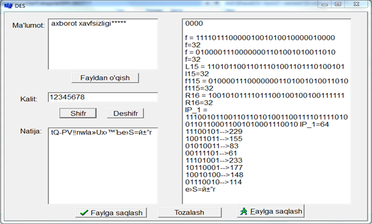

SHIFRLASHNING KRIPTOGRAFIK USULLARI. DASTURIY VOSITANI TUZISH.
Ishdan maqsad. Ma’lumotlarni himoyalasha kriptografik shifrlash tizimlaridn foydalanish va amalda qo’llash
Nazariy qism
Axborotning himoyalashning aksariyat mexanizmlari asosini shifrlash tashkil etadi. Axborotni shifrlash deganda ochik axborotni (dastlabki matnni) shifrlangan axborotga uzgartirish (shifrlash) va aksincha (rasshifrovka kilish) jarayoni tushuniladi.
Kriptotizimlarning ikkita sinfi farqlanadi:
simmetrik kriptotizim (bir kalitli);
asimmetrik kriptotizim (ikkita kalitli).
Shifrlashning simmetrik kriptotizimida shifrlash va rasshifrovka qilish uchun bitta kalitning o’zi ishlatiladi. Demak, shifrlash kalitidan foydalanish xuquqiga ega bo'lgan har qanday odam axborotni rasshifrovka qilishi mumkin. Shu sababli, simmetrik kriptotizimlar maxfiy kalitli kriptotizimlar deb yuritiladi. Ya'ni shifrlash kalitidan faqat axborot atalgan odamgina foydalana olishi mumkin.
Odatda, shifrlash kaliti ma'lumotlar fayli va massividan iborat bo’ladi va shaxsiy kalit eltuvchisida masalan, disketda yoki smart-kartada saqlanadi. Shaxsiy kalit eltuvchisi egasidan boshqa odamlarning foydalanishiga qarshi choralar ko’rilishi shart.
Simmetrik shifrlash axborotni «o’zi uchun», masalan, egasi yo’qligida undan ruxsatsiz foydalanishni oldini olish maqsadida, shifrlashda juda qulay hisoblanadi. Bu tanlangan fayllarni arxivli shifrlash va butun bir mantiqiy yoki fizik disklarni shaffof (avtomatik) shifrlash bulishi mumkin. Simmetrik shifrlashning noqulayligi - axborot almashinuvi boshlanmasdan oldin barcha manzilatlar bilan maxfiy kalitlar bilan ayirboshlash zaruriyatidir. Simmetrik kriptotizimda maxfiy kalitni aloqaning umumfoydalanuvchi kanallari orqali uzatish mumkin emas. Maxfiy kalit jo’natuvchiga va qabul qiluvchiga kalitlar tarqatiluvchi himoyalangan kanallar orqali uzatilishi kerak.
Simmetrik shifrlash algoritmining ma'lumotlarni abonentli shifrlashda, ya'ni shifrlangan axborotni abonentga, masalan, Internet orqali, uzatishda amalga oshirilgan variantlari mavjud. Bunday kriptografik tarmoqning barcha abonentlari uchun bitta kalitning ishlatilishi xavfsizlik nuqtai nazaridan nojoizdir. Haqiqatan, kalit obro’sizlantirilganda (yo’qotilganida, o’g’irlatilganda) barcha abonentlarning hujjat almashishi xavf ostida qoladi.
Elektron ko'rinishdagi ma'lumotlarni hajmini ortishi, uni saqlash bilan bog'liq bo'lgan muammolar hajmini ham ortishiga olib keladi. Ushbu muammolarni hal qilishda mavjud bo'lgan usullar esa, kundan-kunga yangilanaveradi. Shunga qaramasdan axborot xavfsizligini ta'minlashda qadimda ham foydalanilagan va hozirda ham foydalanilayotgan usullardan biri bu – kriptografik himoya usullaridir. Kriptografik himoya usullari o'zining ishonchliligi, samaradorligi va foydalanish darajasi qamrovi kengligi bilan boshqa usullardan farq qiladi. Hozirda axborot xavfsizligini ta'minlashning har bir jabhasida kriptografik usullardan foydalanilmoqda.Kriptografiya - axborotlarni aslidan o'zgartirilgan holatga akslantirish uslublarini topish va takomillashtirish bilan shug'illanadi.
Axborotlarning muxofazasi masalalari bilan kriptologiya (kryptos- mahfiy, logos- ilm) fani shug'illanadi. Kriptologiya maqsadlari o'zaro qarama-qarshi bo'lgan ikki yo'nalishga ega: – kriptografiya va kriptoanaliz. Kriptografiyaning ochiq ma'lumotlarni shifrlash masalalarini matematik uslublari bilan shug'illanishi to'g'risida yuqorida aytib o'tildi. Kriptoanaliz esa shifirlash uslubini bilmagan holda shifrlangan ma'lumotni asli holatini topish masalalarini yechish bilan shug'illanadi.
Hozirgi zamon kriptografiyasi quyidagi to'rtta bo'limni o'z ichiga oladi:
Simmetrik kriptotizimlar.
Ochiq kalit algoritmiga asoslangan kriptotizimlar.
Elektron raqamli imzo kriptotizimlari.
Kriptotizimlar uchun kriptobardoshli kalitlarni ishlab chiqish va ulardan foydalanishni boshqarish.
Kriptografik uslublardan foydalanishning asosiy yo'nalishlari: mahfiy ma'lumotlarni ochiq aloqa kanali bo'yicha muhofaza qilish holda uzatish, ularning xaqiqiyligini ta'minlash, axborotlarni kompьyuterlar tizimi xotirasida shifrlangan holda saqlash va shu kabi masalalarning yechimlarini o'z ichiga oladi.
Takidlash joizki, kriptografiya uzoq vaqt davomida davlat organlari aloqa tarmoqlarida almashinadigan ma'lumotlar muhofazasining ta’minlanishida qo'llanib kelindi. Kompyuter tarmoqlari va elektron hujjat almashinuvi texnologiyalarining rivojlanishi moliya, bank ishlari, savdo-sotiq kabi sohalarda qo'llanilishi axborot muhofazasining kriptografik usullarini umumjamiyat faoliyatining turli sohalariga keng kirib borishiga sabab bo'ldi. Haqiqatan ham, aloqa tarmoqlarida axborotni muhofaza qilinishi, kriptografik usulda ta'minlash umumjamiyat taraqiyotining rivojlanish bosqichlari bilan bog'liq bo'lgan uzoq tarixiy manbalariga ega bo'lib, umuminsoniyat jamiyatiga hizmat qilmasligi tajublanarli holat bo'lar edi.
Vernam shifri. Bu shifrlash algoritmida xor amalidan foydalanib shifrlanadi. Yani, ochiqmatn va uni shifrlash berilgan kalit bo’ladi. Ochiqmatnning birinchi simvoli bilan kalitning birinhi simvoli xor amali bo’yicha qo’shishdan hosil bo’lgan simvol shifrmatnning birinchi simvoli bo’ladi. Vernam usulida shifrlashda kalit tabiyki, ochiqmatn simvollaridan kam bo’lib qolishi mumkin bunday hollarda kalit takroran yozilib ochiqmatn simvollari bilan teng holatga kelguncha davom ettiriladi. Quyida vernam usulida shifrlangan ma’lumot keltirilgan.
T – SALOM
K – IKKI (I K K I I)
S = 10010 A = 00000 L = 01011 O = 01110 M = 01100
I = 01000 K = 01010 K = 01010 I = 01000 I = 01000
F = 00101 V = 10101 @ = 11110 Z = 11001 ! = 11011
Hosil bo’lgan shifrmatn – FV@Z!

1 – rasm. Vernam shifrlash algoritmida shifrlash jarayoni
RSA(Rivest, Shamir, Adleman) usuli.
T₀= USMONOVSHAXOB mantni shifrlaymiz. Bunda kalitlarni topish uchun quyidagi ishlarni qilamiz.
Tub bo’lgan p=227 va q=241 sonlarini tanlab olamiz.
Ushbu n=pq=227*241=54707 sonini aniqlaymiz.
So’ngra, ᵩ(p,q)=(p-1)*(q-1)=226*240=54240 sonini topamiz, hamda bu son bilan 1 dan farqli biror umumiy bo’luvchiga ega bo’lmagan e=277 sonini olamiz.
(e*d)mod ᵩ(p,q)=1 shartni bajaruvchi d sonini topamiz. Bunda
d=(ᵩ*n+1)/e=(54240*n+1)/277 tenglikni qanatlantiruvchi d butun sonni topamiz. n=7 bo’lganda tenglik bajariladi d=3133.
Shunday qilib, kriptotizimilarda RSA algoritmining qo’llanishi quyidagicha: har bir foydalanuvchi ikkita yetarli darajada katta bo’lmagan p va q tub sonlarni tanlaydilar va yuqorida keltirilgan algoritm bo’yicha d va ye tub sonlarini ham tanlab oladi. Bunda n=pq bo’lib, {e;n} ochiq kalitni {d;n}esa mahfiy kalitni tashkil etadi. Ochiq kalit ochiq ma’lumotlar kitobiga kiritiladi. Ochiq kalit bilan shifrlangan shifrmatnni shu kalit bilan deshifrlash imkoniyati yo’q bo’lib, deshifrlashning mahfiy kaliti faqat shifr ma’lumotining xaqiqiy egasigagina ma’lum.
Bizda T₀= USMONOVSHAXOB matn uchun ochiq kalit {277;54707}, maxfiy kalit esa {3133;54707} bo’ladi.
Shifrlash: shifrlash quyidagi formula yordamida amalga oshiriladi. Bunda harflar o’rniga gammalash jadvalidagi o’nlik sonlarqo’yiladi.
Ue mod n=21277 mod 54707=45805
Se mod n=18277 mod 54707=31014
Me mod n=14277 mod 54707=33510
Oe mod n=16277 mod 54707=45805
Ne mod n=15277 mod 54707=51224
Oe mod n= 16277 mod 54707=4243
Ve mod n=22277 mod 54707=39974
Se mod n=18277 mod 54707=3964
He mod n=9277 mod 54707=49193
Ae mod n=1277 mod 54707=1
Xe mod 24=9277 mod 54707=4243
Oe mod n=16277 mod 54707=31014
Be mod n=2277 mod 54707=3964
T₁=45805,31014,33510,45805,51224,4243,39974,3964,49193,1,4243,31014,3964
Shifrlangan matn ko’rinishi .

2-rasm. RSA shifrlash algoritmida shifrlash va deshifrlash jarayoni
Deshifrlash: Deshifrlash jarayonida shifrlangan matnni yopiq kalit yordamida shifrlaymiz.
T₁=45805,31014,33510,45805,51224,4243,39974,3964,49193,1,4243,31014,3964
45805d mod n=458053133 mod 54707=21=U
31014d mod n=310143133 mod 54707=18=S
33510d mod n=335103133 mod 54707=14=M
45805d mod n=458053133 mod 54707=15=O
51224d mod n=512243133 mod 54707=16=N
4243d mod n=42433133 mod 54707=15=O
39974d mod n=399743133 mod 54707=22=V
3964d mod n=39643133 mod 54707=18=S
49193d mod n=491933133 mod 54707=9=H
45805d mod n=13133 mod 54707=1=A
4243d mod n=42433133 mod 54707=24=X
31014d mod n=310143133 mod 54707=15=O
3964d mod n=39643133 mod 54707=2=B
T₀= USMONOVSHAXOB
DES shifrlash algoritmi. DES shifrlash algoritmi AQShda 1998 yilning 31 dekabrgacha standart shifrlash algoritmi deb hisoblangan. Bu algoritmda qo'llanilgan akslantirishlar kriptografik nuqtai nazardan bardoshli, ammo dastlabki 56 - bitli kalitning uzunligi, bugungi kun hisoblash texnika va texnologiyalarining yutuqlaridan foydalanilganda, mumkin bo'lgan barcha 256 ta kalitlarni to'la tanlab chiqish imkoniyatini sezilarli qisqartiradi.
AQShning “Standartlar va Texnologiyalar Milliy Instituti” tomonidan 1997 yilda yangi standart uchun konkurs e'lon qilinib, 2000 yilning 2 oktyabrida uning g'olibi aniqlandi. Bu standart shifrlash algoritmi AES FIPS -197 deb nomlanib, uning asosini Feystel tarmog'i tashkil etmaydi.

3-rasm. DES shifrlash algoritmida shifrlash jarayoni
Topshiriq:
Amaliy ishning ketma-ketligi bilan tanishing;
Amaliy ish bo'yicha tahlil o‘tkazing va hisobot tayyorlang.
Test savollariga tayyorlaning.
Zamonaviy kriptografik shifrlash usullarining imkoniyatlarini tahlil qiling.
Nazorat savollari:
Kriptografiya nima?
Shifrlash algoritmi nima?
Ma'lumotlar shifrlash bilan qanday himoyalanadi?
Shifrlash kaliti nima?